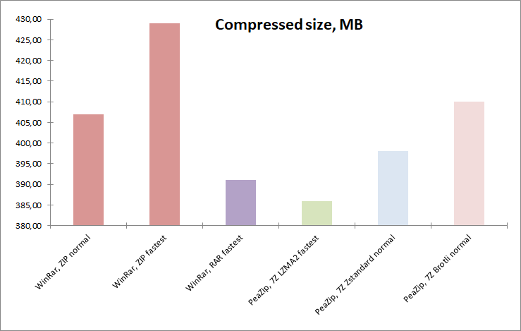
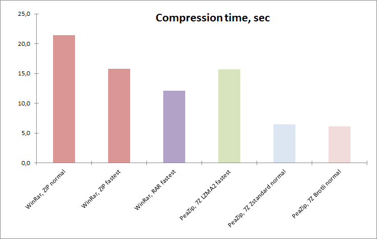
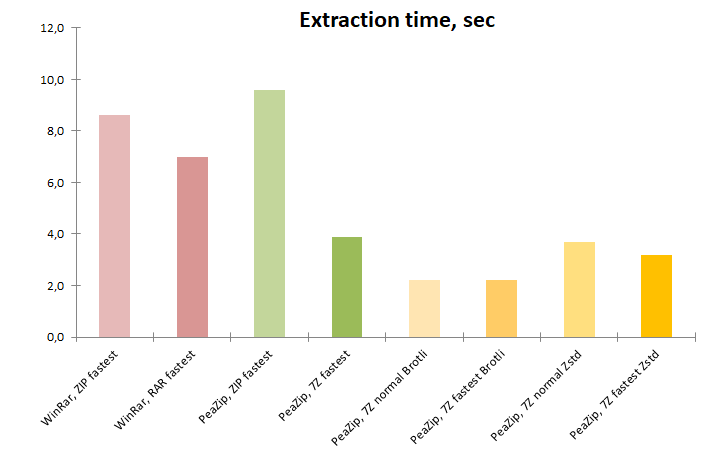

|

|
PeaZip
is a free cross-platform file compressor application that provides an
unified
portable GUI for many Open Source technologies like 7-Zip, FreeArc,
PAQ, UPX... free alternative to WinRar, WinZip and
similar
proprietary software.
- Create 7Z, ARC, BR, BZ2, GZ, *PAQ, PEA, QUAD/BALZ, TAR, UPX, WIM, XZ,
ZIP, ZST
files
- Open and extract ACE, ARJ, CAB, DMG, ISO, LHA,
RAR, UDF, ZIPX files and more, over 200 archive types
supported
Features of PeaZip includes: archives
opener and extractor, batch creation and extraction
of multiple
archives at once, convert files, create
self-extracting archives, split and join files,
strong encryption with two factor authentication, encrypted password
manager, secure deletion, find
duplicate files, calculate hash and checksum,
export job definition as script.
|

|
|
Fast compression: faster than
fastest ZIP
|
|
|
Goals
Analyze
modern compression algorithms capable to provide performances equal or
better than fastest commonly available implementation of classic
Deflate algorithms, employed in obiquitous ZIP format.
Comparison is conducted, in terms of compression / extraction speed and
compression ratio, against performances of Deflate ZIP in the range
from default to fastest compression settings.
|
|
Software
settings
Benchmarks
are conducted
on Windows 10 2009 64 bit using 64 bit versions of:
All applications are tested using default,
out-of-the-box compression settings for the selected archive format.
No cryptography option is set, since encryption impact on performances
is out of the scope of
this benchmark.
|
|
Hardware
settings
Notebook with Intel Core i7-8565U CPU, 4
physical cores with hyper-threading (8 logical cores), 8 GB RAM
System disk 512 GB PCIe NVMe SSD, NTFS filesystem
|
|
|
|
Compression
formats compared in this benchmark
- 7Z file
format
Open Source archive format
by 7-Zip, providing strong and efficient compression and good
performances on multicore machines, tested with:
- LZMA2 algorithm
(strong compressor), set at fastest compression level
- Brotli algorithm (fast
compressor), set at default compression
level
- Zstandard algorithm (fast compressor), set at default
compression
level
- RAR file
format
(RarLabs RAR5 revision) proprietary archive format providing
better
compression that ZIP using PPMd algorithm, tested
at fastest compression level
- ZIP file
format
widely used archive format, tested at default and fastest compression
levels (with
Deflate algorithm) from
WinRar, which qualified as the fastest zip compressor in previous batch
of PeaZip's compression
benchmarks
|
Input data
Same set of data of previous "Brotli vs Zstandard" benchmark is used:
input contains 43 files in 4 directories for total 1.22 GB
(1,318,000,857 bytes), composed by well known reference files
representative of different data structures, widely used for
compression
benchmarks:
|
|
|
Faster than zip
compression
benchmark methods
Benchmark
input data is saved to system disk (PCIe SSD) and compressed to system
disk, same partition, separate directory; the resulting archives are
then extracted to
separate directory on same (system) disk/partition.
Each compression and extraction test is repeated 10 times to get an
average value; size is expressed in MB, time in seconds.
For each tested format, alhgorithm, and compression level, are used
default compression settings as
pre-set out of the box by the file archiver applications being tested
(PeaZip, and
WinRar).
WinRar is chosen as reference for the fastest commonly available ZIP
Deflate implementation, due results of previous benchark tests.
Performance of ZIP Deflate is analized at normal and fastest
compression levels, and compared with non-Deflate algorithms at
compression levels which provides comparable compression ratio and
speed results.
Faster than zip
compression
benchmark results
table, the lower the better for all columns
Utility, format, algorithm, level
|
Compression
(sec)
|
Archive
size
(MB) |
Compression
ratio
|
Extraction
(sec) |
WinRar,
ZIP normal
|
21.4
|
407
|
32.58%
|
8.0
|
| WinRar,
ZIP fastest |
15.8
|
429
|
34.34%
|
7.2
|
| WinRar,
RAR PPMd fastest |
12.1
|
391
|
31.30%
|
5.0
|
PeaZip,
7Z LZMA2 fastest
|
15.7
|
386
|
30.90%
|
4.1
|
| PeaZip,
7Z Zstandard normal |
6.5
|
398
|
31.86%
|
4.1
|
| PeaZip,
7Z Brotli normal |
6.1
|
410
|
32.82%
|
2.0
|
Faster than zip compression
ratio
results
All alternative formats attained
better compression ratio results than ZIP Deflate at fastest
compression levels.
All formats (except for 7Z Brotli) attained better
compression ratio than ZIP Delfate at normal compression level, with
LZMA2 being the best compressor followed by RAR PPMd and Zstandard..

Faster than zip compression
speed
results
All formats
compressed the input set significantly faster than
ZIP Deflate normal, and even faster than ZIP Deflate at fastest
compression level.
7Z LZMA and RAR PPMd compression times are roughly comparable with ZIP
Deflate
at fastest compression level (with RAR being faster), but both
alternatives provides
vastly improved compression ratio.
7Z Zstandard and 7Z Brotli at normal compression level are
approximatively 3x times
faster than ZIP Deflate at normal compression level, 2.5x times faster
than ZIP Deflate fastest level.

Faster than zip extraction
speed results
All formats
decompressed the benchmark data significantly faster than
ZIP Deflate, either compressed at normal or fastest level.
For extraction, 7Z LZMA2 at fastest level is nearly 2x faster than ZIP
Deflate, and slightly faster than RAR PPMd, reversing the performance
advantage RAR PPMd have in compression speed test.
7Z Zstandard extraction speed at all levels overlaps with 7Z LZMA2,
while 7Z Brotli provides significantly faster extraction, the fastest
of the test, nearly 4x faster than ZIP Deflate range of speed.

Honorable mention: ARC
format
At minimum (1 on 9) compression level PeaZip with ARC format completed
compression test in 5.5 sec and extraction test in 2,7 sec, but created
a 447 MB archive which does not fall in the desired range, being larget
than the 429 MB output created by Deflate at minimum compression level.
At 2 on 9 compression level ARC completed the compression test in 15.3
sec creating a 310 MB archive, which is an excellent compression ratio,
outperforming all other alternatives, but extraction needed 28.4 sec,
almost 4 times slower than Deflate.
Due those drawbacks the ARC format was excluded from the test, but it
remains an extremely interesting archive format.
|
While creating
Deflate-based ZIP archives remains an excellent choice due the
ubiquitous support from file archivers and file managers (and built-in
support in many operating systems), it is no longer the better choice
performances-wise.
New algorithms performs better on modern architectures and scales
better in performances on multicore machines, providing better results
in terms of speed, especially for extraction, and compression ratio.
With WinRar, creating a RAR (PPMd algorithm)
at fastest compression level resulted
in a smaller archive AND took less time.
The same holds true with PeaZip with 7Z LZMA2 at fastest compression level,
with
extraction being almost twice faster than Deflate and even faster than
with RAR PPMd, a bonus that is especially
important for content distribution.
Switching 7Z compression to Brotli and Zstandard algorithms, which are
ground up designed for high performances, provides utter speed
improvements: both algorithms at normal compression level are able to
compete with ZIP Deflate in terms of compression ratio, but completing
the benchmark at almost
3 times faster compression speed.
Zstandard, which
provides a compression ratio even better than Deflate
normal, is twice as fast for extraction than ZIP Deflate.
Brotli, which
provides a compression ratio intermediate from Deflate
normal and Deflate fastest, is almost 4 times faster for extraction
than ZIP Deflate.
In
brief:
- On modern machines using RAR or 7Z format at fastest
compression level provide faster compression, and especially faster
extraction, than using traditional ZIP format - even benchmarking
the fastest Deflate ZIP implementations and employing fastest
compression settings for Deflate.
- While being faster, both RAR and 7Z LZMA2 at fastest
compression level also provide significantly better compression ratio
than Deflate ZIP.
- New Brotli and Zstandard algorithms available in 7Z
provides further speed advantages over Deflate ZIP, while remaining
comparable or better in terms of compression ratio.
|
|